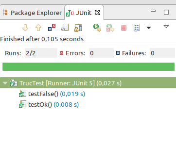

Les Tests Unitaires
Parce que tester c'est bien
Partie 1
Généralités sur les tests
C'est quoi un test ?
Pour commencer, selon vous c'est quoi un test ?
Selon wikipedia : "En informatique, le test est une procédure de vérification lors de la programmation d’un logiciel (...) permettant la validation de ce qui a été produit"
C'est quoi un test ?
- Une preuve de fonctionnement
- Une documentation
- Une aide à la maintenance
- Un gain de temps
- Une sécurité
- Une aide au refactoring
- Un contrat
- Un outil d'intégration des nouveaux développeurs
- etc...
- Bref, pour quasiment tous les projets, c'est une nécessité
Pourquoi tester ?
Voici quelques questions auxquels je vous invite à répondre :
- Est-ce à l'utilisateur de découvrir les bugs ?
- Etes vous sûr que votre code fonctionne ?
- Comment prouver qu'il fonctionne ?
- Etes vous sûr qu'il fonctionnera toujours si vous y retouchez ?
- Etes vous sûr qu'il fonctionnera toujours si quelqu'un d'autre y touche ?
Quoi tester ?
Quels sont les différents niveaux de tests que l'on peut mettre en place ?
- Des tests unitaires
- Des tests d'intégration (aka de composants aka de contrats)
- Des tests automatisés (aka fonctionnels)
- Des tests manuels (aka utilisateurs)
La pyramide des tests
Dans la pyramide ci-dessous, la base est la moins couteuse à mettre en place et permet le retour le plus rapide, le sommet est le plus couteux, mais le plus proche de l'expérience utilisateur.

Quand tester ?
Il y a 2 approches majeures :
- Le Test Last Development (TLD) aussi connu sous le nom de Test-After
- Le Test Driven Development (TDD)
Principes du TLD
Sans surprise, pour le TLD, le but est d'écrire les tests après le développement.
C'est l'approche la plus répandue, notamment pour le code ayant beaucoup d'historique (legacy code) et pour lequel aucun ou très peu de tests sont présents.
Principes du TDD
A l'inverse du TLD, l'approche TDD veut que les tests s'écrivent systématiquement avant le développement.
Voici les "lois" du TDD :
- Vous devez écrire un test qui échoue avant de pouvoir écrire le code de production correspondant.
- Vous devez écrire une seule assertion à la fois, qui fait échouer le test ou qui échoue à la compilation.
- Vous devez écrire le minimum de code de production pour que l'assertion du test actuellement en échec soit satisfaite.
TDD vs TLD
Voici les avantages / inconvénients de chacunes de ces approches
- Temps requis à l'écriture : TDD nécessite plus de temps que TLD pour écrire les tests du fait du process itératif, les développeurs passent constamment du code de test au code de production.
- Courbe d'apprentissage du code : TDD a une courbe d'apprentissage en pas à pas tandis que TLD a une courbe d'apprentissage quasi inexistante puisque le code est déjà connu au moment des tests
- Productivité / Cout de maintenance : TDD permet de rendre la maintenance de plus en plus facile car le produit est stable et les développements fiables, l'approche force à ce que tout code écrit soit forcément testé, contrairement à TLD.
- Taille du code : l'avantage va à TLD, mais du fait que, souvent, des cas de tests sont oubliés ou mis de côté et que l'approche ne force pas forcément au refactoring, contrairement à TDD où tous les cas de tests doivent avoir été prévus et écrit.
- Simplicité du code : TDD force à utiliser des concepts particuliers (design pattern, mock, etc..) contrairement à TLD. Les concepts sont plus complexes mais le code plus propre.
TDD vs TLD
Comment choisir entre les 2 approches ?
- Nature du produit : TDD est adapté pour les produits importants, avec un forte attente de fiabilité ou avec une durée de vie importante (ex : logiciel de banque). TLD est suffisant pour de petits projets, avec une durée de vie courte ou peu d'attente niveau fiabilité (ex : site éphémère).
- Profil de l'équipe : TDD est particulièrement adapté pour les grosses équipes ou celles accueillant de nouveaux membres, TLD peut être suffisant pour de très petites équipe qui ont une forte maitrise du code.
- Marché : le nombre d'utilisateurs et leurs natures peut également beaucoup jouer sur le choix de l'approche
- Placement : réactivité vs proactivité, rapidité vs qualité/stabilité/fiabilité, court terme vs long terme, etc..
- Recommandation : Clean Code recommande l'utilisation de TDD afin de garantir un maximum de qualité et de maitrise du code. En bonus : les tests documentent le code !
TDD vs TLD
En résumé : Mieux vaut utiliser l'approche TDD autant que possible afin d'assurer un haut niveau de qualité et une meilleure maitrise du code. TLD peut être utilisé dans des cas très spécifiques (projet avec peu d'attente de fiabilité ou à durée de vie courte) et/ou éventuellement en tant que 1ère approche de la mise en place de tests unitaires.
Quelques pièges à éviter
- Vouloir atteindre à tout prix une couverture de tests à 100% sans savoir ce qui est réellement testé
- Générer les tests via des outils sans savoir comment modifier le code généré
- Mettre le code de test en production
- Tester du code mort
- Ne pas se donner ou ne pas prendre le temps de faire les tests (donc d'assurer que notre livrable fonctionne)
- Oublier que le code de test reste avant tout du code (Les bonnes pratiques s'appliquent aussi aux tests !)
Partie 2
Outils et principes pour les développeurs
Avec quoi tester ?
Dans Eclipse, il y a une vue dédiée pour les tests unitaires :

Avec quoi tester ?
Dans Eclipse, il y a une vue dédiée pour la couverture :
Avec quoi tester ?
Dans Android Studio, il y a une vue dédiée pour les TU :
Avec quoi tester ?
Dans Android Studio, il y a une vue dédiée pour la couverture :
Avec quoi tester ?
Dans Android Studio, il y a également un outil de génération de tests automatisés via Espresso, mais il n'est pas recommandé de l'utiliser sans savoir utiliser Espresso sans ce générateur.
Avec quoi tester ?
Beaucoup de librairies existent pour nous aider à assurer les différents niveaux de tests
- Test unitaires et tests d'intégration : JUnit, AssertJ, TestNG, etc..
- Isolation des tests : Mockito, WireMock, MockWebServer, RestMockServer, MockServer, etc..
- Couverture de tests : Jacoco, Cobertura, CodeCover, etc...
- Tests automatisés : Cucumber, Selenium, Fitness, Espresso, Spoon, etc...
Avec quoi tester ?
Dans notre cas, nous allons utiliser en priorité :
- JUnit ET AssertJ pour les tests unitaires
- Mockito pour l'isolation de dépendances
- WireMock pour l'isolation de web-services
- Jacoco pour la couverture de tests (inclu par défaut dans Eclipse et dans Android Studio)
- Espresso et Spoon pour les tests automatisés via Android Studio
Clean Code donc Clean Test
Comme dit précédemment, les tests sont du code, il est donc nécessaire d'appliquer les régles du Clean Code mais également certaines règles supplémentaires.
Modifier un test ne doit être ni couteux ni compliqué au risque qu'écrire les tests nécessitent plus de temps que d'écrire le code de production.
Des tests grossiers sont parfois même pires que de n'avoir aucun test !
Clean Code donc Clean Test
"Le code de test est aussi important que le code de production, il ne représente pas un travail de seconde zone, et exige réflexion, conception et soin. Il doit rester aussi propre que le code de production."(cf : Clean Code par Uncle Bob)
Test unitaire ?
Qu'est-ce qui définit qu'un test est unitaire ou non ?
Réponse : il ne test qu'une seule et unique chose
Clean Test
Voici quelques règles à appliquer pour avoir des tests propres (donc lisibles) :
- N'avoir qu'une seule assertion (vérification) par test (d'où le terme de test UNITAIRE)
- N'avoir qu'un seul concept par test
- Utiliser l'écriture GWT
- Utiliser les règles FIRST
- Appliquer TDD ou en TLD : concevoir son code pour que celui-ci soit facilement testable
- Si besoin, simplifier les tests en simplifiant le code de production
Ecriture GWT
L'écriture GWT permet l'écriture d'un test en 3 composantes ou étapes :
- Given : les données dont on a besoin pour le test
- When : l'événement qui va être testé
- Then : l'assertion ou vérification
- Nos tests deviennent alors lisibles de cette façon : Etant donné x (Given) quand on fait y (When) alors on obtient z (Then)
- Cette écriture est également connu sous le nom du "3A Rule" : Arrange, Act, Assert
Les règles FIRST
Tout test écrit doit, autant que possible, respecter les 5 règles formant l'acronyme FIRST :
- Fast (rapide) : Plus les tests sont rapides, plus on peut les executer souvent et facilement, et plus on peut s'appuyer dessus pour éviter une dégradation du code
- Independent (indépendant) : Les tests ne doivent pas dépendre les uns des autres. On doit pouvoir executer les tests dans l'ordre que l'on souhaite.
- Repeatable (reproductible) : Un même test lancé plusieurs fois doit mener au même résultat (même dans un environnement changeant)
- Self-Validating (auto-validant) : Les tests doivent avoir un résultat binaire, ils réussissent ou ils échouent, il ne faut pas avoir à ouvrir un log ou comparer manuellement 2 fichiers par exemple
- Timely (au moment opportun) : privilégier TDD pour ne jamais avoir à dire qu'un code est trop complexe à tester ou que la date de livraison ne nous permet pas de tester !
Heuristiques du Clean Test (1/2)
Clean Code écrit quelques indicateurs ou heuristiques sur les tests :
- T1 : Tests insuffisants - Tant qu'au moins une condition/branche/calcul n'est pas vérifié, les tests ne sont pas suffisants
- T2 : Utiliser un outil d'analyse de couverture - permet de détecter T1
- T3 : Ne pas omettre les tests triviaux - ils sont faciles à écrire et leur valeur documentaire est élevée par rapport au faible coût de production
- T4 : Un test ignoré est une ambiguité à lever - on peut, en dernier recours, utiliser @Ignore dans l'attente de lever de l'ambiguité
- T5 : Tester aux conditions limites - en général, ce sont les cas particuliers qui présentent les plus gros soucis
Heuristiques du Clean Test (2/2)
Clean Code écrit quelques indicateurs ou heuristiques sur les tests :
- T6 : Tester autour des bugs - Un bug peut en cacher un autre, donc si un test échoue, lancer également tout ceux en rapport
- T7 : Les motifs d'échec sont révélateurs - Ayez les outils adaptés dans l'IDE, rouge/vert + stack sont visuels !
- T8 : Les motifs dans la couverture de tests sont révélateurs : un code non couvert peut expliquer l'échec d'autre portion de code
- T9 : Les tests doivent être rapides - un test lent est un test qui ne sera pas executé
Quelques conventions et préconisations
- Les tests doivent être dans un dossier séparé (test et androidTest pour Android Studio par exemple) afin de pouvoir facilement les exclure du livrable destiné à la production
- L'organisation des classes de tests doit autant que possible suivre celle du code de production
- Une classe de test doit tester une et une seule classe de production (ou une partie de celle-ci dans certains cas particuliers)
- On suffixe les classes de test par Test (ex : ProduitTest teste la classe Produit) ce qui permet à des outils tel que Maven d'utiliser une regex facilement
- Il y a plusieurs façon de nommer les méthodes de tests, celle la plus répandue consiste à reprendre le nom de la méthode à tester suivi du retour attendu (ex : isEmptyTrue() ou isEmptyReturnTrue() pour une méthode isEmpty())
Merci de votre attention
Des questions ?